Computer Architecture
Presented by Enidu Batuwanthudawe
. . . . . . . . . . . . . . . . . . . .. . . . . . . . . . . . . . . . . . . .
Charles Babbage
Father of Computing
Charles Babbage
-
Charles Babbage (1791-1871) was born in Walworth, Surrey, on December 26, 1791.
-
1823 - Difference Engine, Statistical tables corrected upto 20 digits
-
1833 - Analytical Engine, Automatic computing machine
Charles Babbage
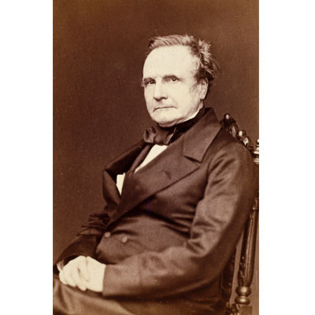
Difference Engine
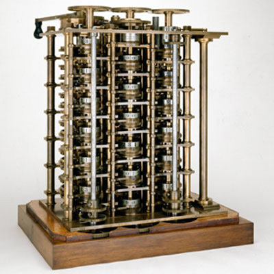
Analytical Engine
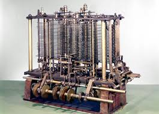
Punch Cards used - Analytical Engine
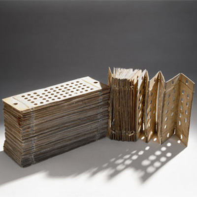
Claude Shannon
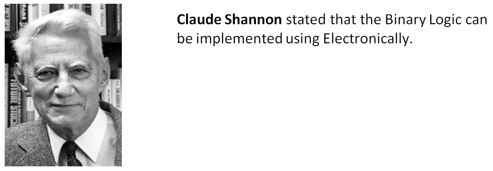
John von Neuman
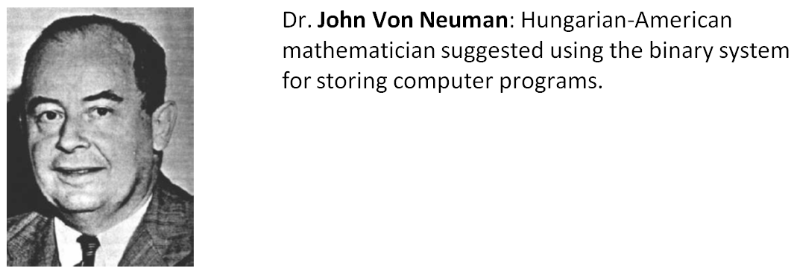
Transistor
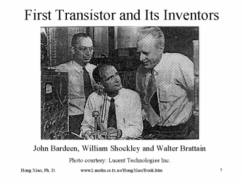
William Bradford Shockley, John Bardeen, Walter Houser Brattain - 1948
Integrated Circuits
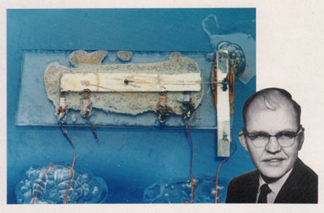
Jack Kilby - 1958, Nobel price 2000
Microprocessors
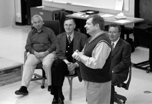
4004 Inventors @ Intel
Old Microprocessors
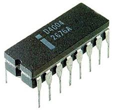
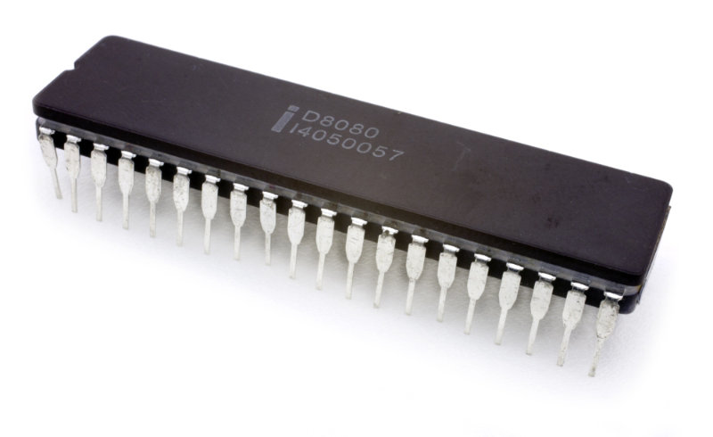
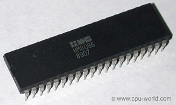
Intel 4004, 8080, 8086
Modern Microprocessors
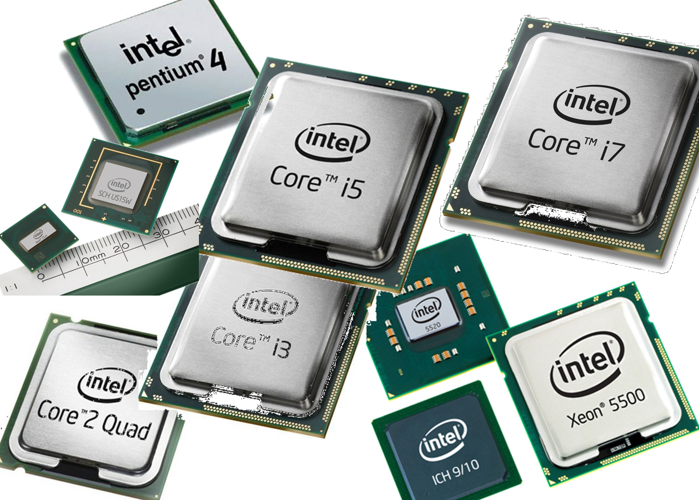
Special milestones
- ENIAC : Electronic Numerical Integrator And Computer, The ENIAC was the first digital computer, John Mauchly and J. Presper Eckert built the machine at the University of Pennsylvania. Decimal number system.
- UNIVAC : Universal Automatic Computer, first mainframe computer for general business use; designed by Mauchly and Eckert.
Special milestones
- EDVAC : Electronic Discrete Variable Automatic Computer, Binary number system. By Mauchly and J. Presper Eckert, who were later joined with John von Neumann. It uses Stored program concept too.
- BINAC : Binary Automatic Computer, BINAC was the world's first stored program electronic computer.
Special milestones
- EDSAC : Electronic Delay Storage Automatic Calculator, EDSAC was the world's first practical stored program electronic computer, by Maurice Wilkes. (British)
- Z1 : First freely programmable computer
- Altair 8800 : : First personal computer, World's first microcomputer kit to rival commercial models. The Altair, produced by a company called Micro Instrumentation and Telemetry Systems (MITS)
Computer Generations
- 5 Generations
- Different technologies
Founder of C Programming
Dennis Ritchie
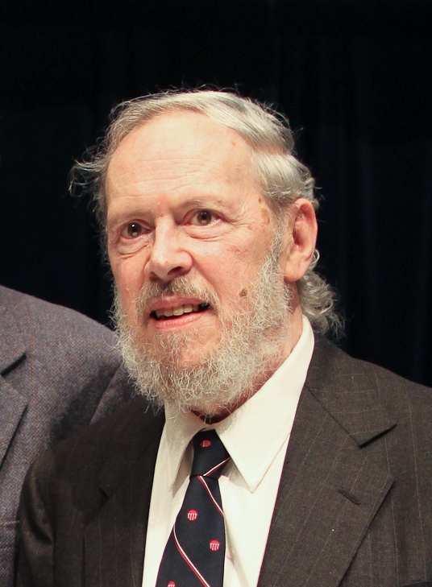
Co-founder of Apple
Steve Jobs
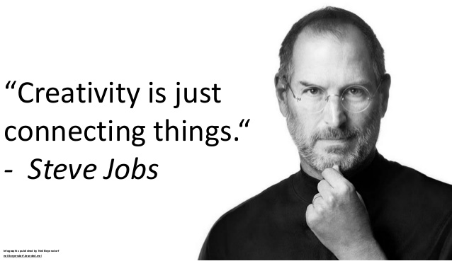
Founder of Java Language
James Gosling
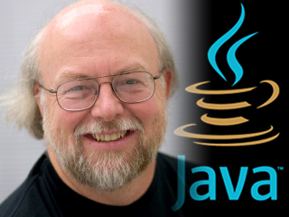
Founder of Python Language
Guido van Rossum